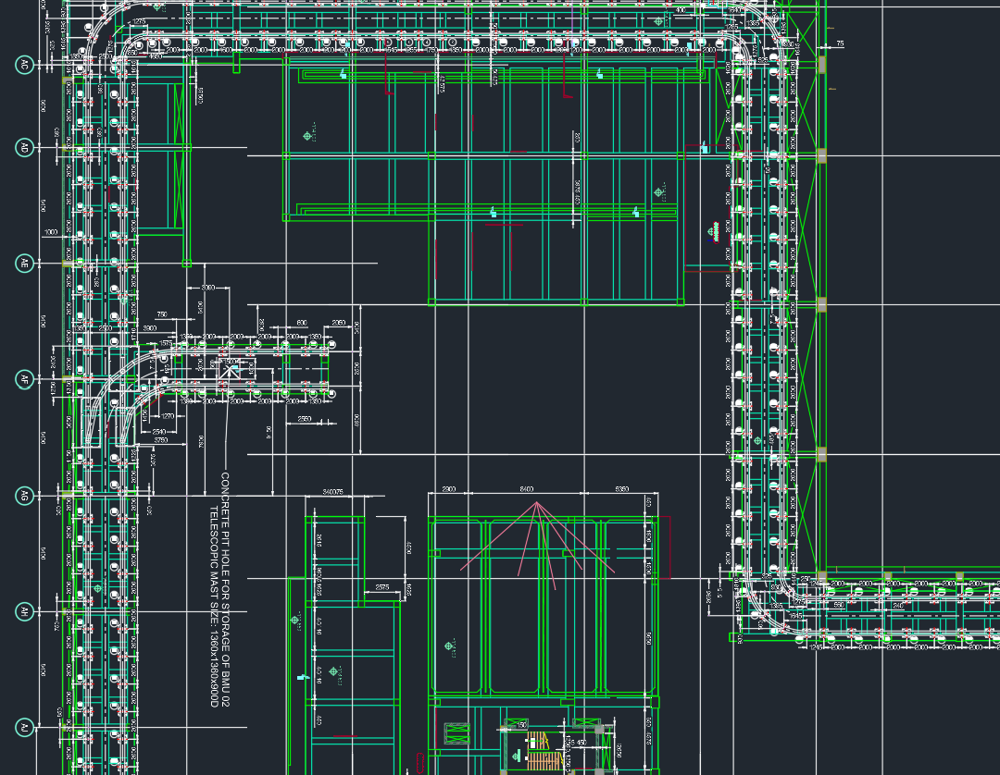
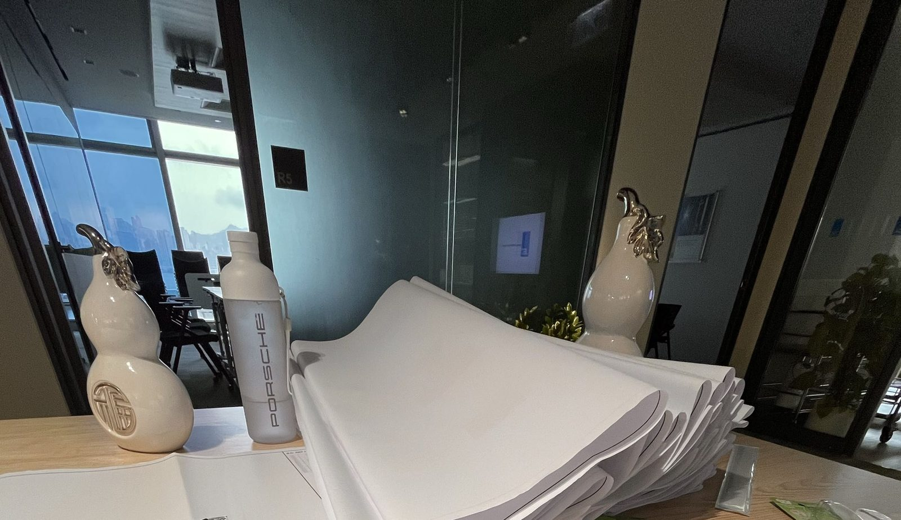

Goals & Portfolio
Goals & Work Portfolio
The goals below guided my co-op work term at Jardine Engineering Corporation. Each one now
closes with an honest outcome, followed by the deliverables I produced against them.
SMART Personal Development Goals
Three goals set at the start of the term, each tied to a competency category. I've assessed
each one at the end of the term rather than only stating the intention — including the
one I only partly reached and the reason why.
SMART GoalCreativity & Innovation
Bring an original idea forward each month
My lowest self-assessed competency area. Contribute at least one original suggestion or
alternative approach to a design or method statement each month at Jardine.
Partly met
Missed May completely — I was heads-down on drawing revisions and never lifted my
head far enough to propose anything. Managed it in June and July, including suggesting an
alternative fixing arrangement on a remedial proposal where the original approach would
have meant drilling into an existing structural member. Two months out of three isn't the
goal I set. What I did learn is that the ideas didn't arrive by trying harder to be
creative — they arrived once I understood a job well enough to see that an
alternative existed at all, which means the real prerequisite was competence, not
imagination.
SMART GoalNetworking & Relationship Building
Build relationships beyond my direct supervisors
Establish working relationships across the wider project team, including regular contact
with my AECOM counterparts at the PWH site.
Met
Contact with the AECOM counterparts at PWH became routine rather than an occasion, and
the quotation and material submission work put me in direct contact with suppliers I'd
otherwise never have spoken to. The site visits to Kai Tak, Tung Chung, and Mei Foo added
people well outside my own office. The qualifier I'd add is that every one of these
relationships was created by a task that forced the contact — I didn't build much
that the work didn't hand me, and doing that deliberately is the version of this goal I'd
set next time.
SMART GoalCollaboration & Teamwork
Contribute in coordination meetings, not just observe
Actively participate in site coordination meetings rather than sitting in on them,
especially during site visits to Kai Tak, Tung Chung, and Mei Foo.
Partly met
For the first half of the term I mostly listened, telling myself I needed more context
before I'd earned the right to speak — which was half true and half an excuse. It
shifted in June when I began raising as-built discrepancies directly, including a pipe
routing that didn't match what had been drawn. By July I was contributing without
rehearsing the sentence first. I got there, but it took roughly twice as long as I'd
planned and the delay was entirely self-imposed.
Work-Term Learning Objectives
Four objectives agreed with my supervisor at the start of the placement, assessed at the end.
Three were met; one was not, and I've left it stated plainly rather than softened.
-
AutoCAD Proficiency
Met
Comfortably the objective I went furthest past. Working on real
monorail and BMU drawings across multiple projects — engineering tolerances, base
plate fixings, as-built updates — turned out to be a different exercise from
coursework mainly because an error stops being a mark deduction and becomes somebody
else's problem on a site.
-
Technical Documentation Writing
Met
Method statements and O&M manuals for several clients including
GH, HKU, and Lomond Road, plus tender submissions across Hong Kong. The change that
mattered most wasn't vocabulary or formatting — it was learning to write for the
person holding the document on site rather than for the person approving it.
-
Microsoft Project Scheduling
Not met
The honest one. Scheduling stayed with senior staff for the whole
term, so my exposure was watching rather than doing. I can read a programme and follow a
critical path; I can't claim to build or maintain one, and saying otherwise would be
exactly the kind of unchecked claim the rest of this term taught me not to make. I flagged
it as lagging at the mid-point and it didn't resolve. Some of that was circumstance, but I
also never directly asked to be given a scheduling task, and that part was mine. Carrying
it into my next term as a stated target.
-
Professional Communication
Met
Coordinating with AECOM became a routine part of the job rather than
an event, and being trilingual let me move between the English documentation side and the
Cantonese site conversations without friction. The correction that made the most
difference here is written up on my Critiques page.
Work Portfolio
Some project materials from this co-op term are confidential and cannot be displayed
publicly. Descriptions are provided where visuals cannot be shown.

Co-op · JECInformation & Data Management
AutoCAD Drawings — Monorail & BMU Track Systems
Drafting work for building maintenance unit (BMU) and monorail track systems at Jardine
Engineering Corporation, Hong Kong.
Co-op · JECCommunication
Method Statements & O&M Manuals
Technical documentation for construction and maintenance procedures.
Co-op · JECProfessionalism & Ethics
Quotations & Tender Submissions
Commercial documentation supporting project bids.
Co-op · JECProblem Solving
Structural Design Calculations
Structural calculations verifying that monorail and BMU track installations stay within
design tolerance — checking imposed loads, fixing capacity, and supporting members against
allowable limits, for both new installations and remedial proposals on existing ones.

Co-op · JECNetworking & Relationship Building
Site Coordination — PWH Construction Site
Coordination with AECOM on-site during active construction.
Co-op · JECCollaboration & Teamwork
Site Visits
Kai Tak, Tung Chung, and Mei Foo.